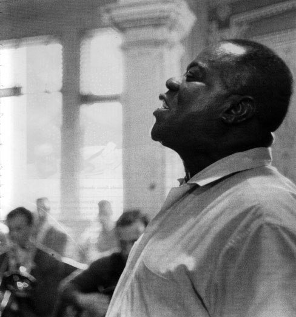
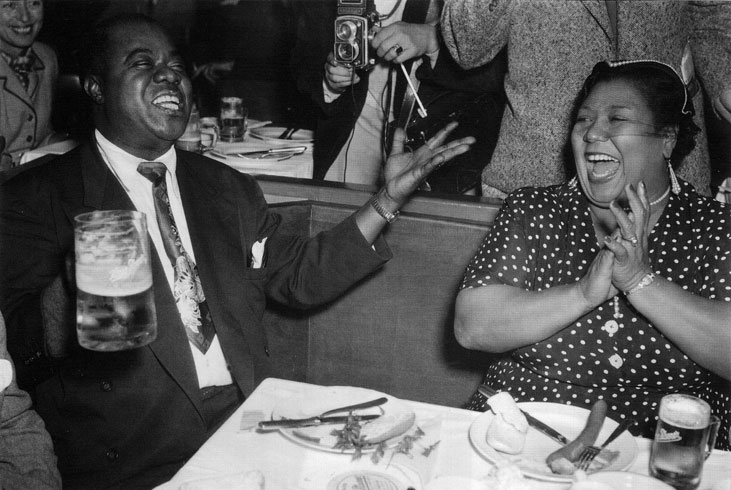
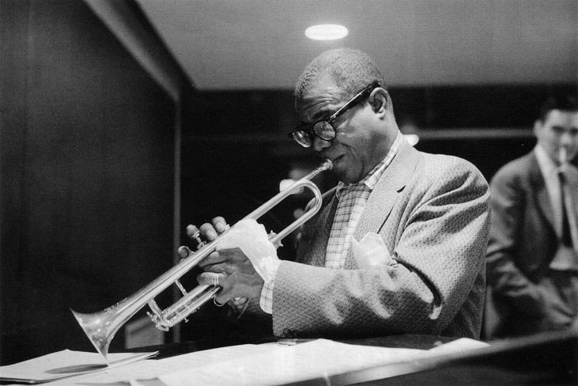
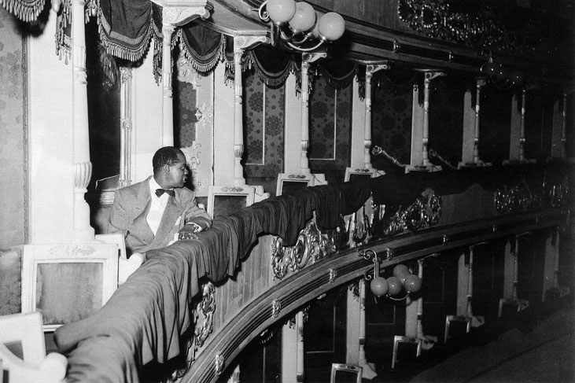
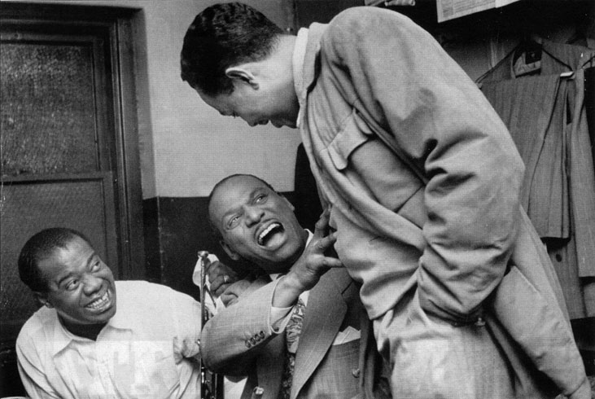

Луи Армстронг
Луи Армстронг
Неговият живот е една типично американска история. За жалък бедняк, превърнал се в огромна бляскава звезда. Образът на Сачмо напомня на любимия клоун, когото всички обичат. Армстронг се ражда в бедност и израства в невежество. В дворчето, заобиколено от мизерни полусрутени барачки за живеене, има корито, в което се къпят всички възрастни независимо от пола. Затова не е чудно, че вече възрастен и голяма звезда на джаза Луи Армстронг изпраща без свян своята фотография за Коледа на многобройните си приятели. Нищо смущаващо, ако не е сниман с ослепителна усмивка как седи на гърнето в клозета - гол и в процес на голяма нужда. За чернокожото му детство може би е нормално, но за елита на американския шоубизнес това е шокиращо. Поначало джазовите музиканти от Ню Орлиънс шашват публиката със своите натуралистични маниери на сцената. Ядат боб с ръце в почивките пред изумените зрители на забогатяваща Америка. Или обсъждат на висок глас проблемите с разстройството и запека си. Баща му Уили Армстронг рано напуска семейството. Той е от хората, за които се казва, че днес са тук, утре ги няма. Просто изчезва. „Баща ми нямаше време за мен, той беше зает с уличници" - казба Луи. Музикантът запазва разочарованието от баща си за цял живот. Когато е вече звезда, в интервю за Лари Кинг признава: „когато баща ми умря, бях на гастрол в Европа. Не отидох на погребението му и даже не изпратих телеграма. Защо да го правя? На него не му пукаше за мен." Малкият Луи и неговата сестра Беатрис живеят ту при баба си Джозефин, ту при майка си Мери Ан. Майката на Луи е перачка, но заработва и като

Луи Армстронг на джаз фестивала в Нюпорт, 1958
проститутка. „Не знам дали майка ми е била проститутка. Но дори да е така, правила го е, без аз да разбирам" - казва Луи. В онези години чернокожите нямат шанс дори за начално образование. Майката му едва чете, а безотговорният му баща е напълно неграмотен. Детството му е трудно. Износва панталони, оставени от клиенти на майка си. Любовник на Мери Ан, който пък работи в хотел, често им носи остатъци от чужди обеди. Луи е заобиколен от наркомания, престъпност, насилие и тежко пиянство. Наръгването с нож и стрелбата са ежедневие. Самият Армстронг по-късно ще признае, че му се е случвало да краде това-онова. Често остава без храна, наглеждат го съседки, повечето от тях проститутки, които по-късно Луи ще нарече сестрите, които ме отгледаха. Понякога мама Мери Ан изчезва, без да се обади, Връща се след няколко дни. Въпреки това между майката и сина има топли отношения. Според биографите бащата Уили не е бил съвсем сигурен, че Луи е негов син, тъй като Мери Ан е проститутка, и тъкмо затова изчезва напълно от живота им. Луи се сблъсква с доста забрани заради черния цбят на кожата си. Не може да се придвижва свободно из родния си град Ню Орлиънс. Едно такова място е Сторивил, район с публични домове за бели, където са на разположение дори дванайсетгодишни момиченца. Когато работата понамалява, те се продават за десет цента на разносвачите на вестници. Сторивил е скандален квартал и присъства във всички легенди за джаза. Луи живее с майка си в черната част на Сторивил на дъното на социалната пирамида. Не може да влиза в ресторанти и барове за бели. По думите на Армстронг в неговия квартал няма нито един приличен дом. За първи път той вижда у дома коледна елха едва когато е вече на 40. Луи никога не е имал истински коледи. Не познава и такова нещо като рожден ден. Той не може да получи и сериозно образование. Роден чернокож, обречен е на мизерно сьществуване. Армстронг казва, че негърът в Ню Орлиънс винаги трябва да има зад себе си бял мъж, който може да каже: „Това е моят негър!" Той прави признание пред журналисти, че в онези времена е трудно за един чернокож да живее, ако няма бял покровител. Защото опасностите го чакат зад всеки ъгъл. Луи не знае рождената си дата и избира 4 юли 1900 година. Нито майка му, нито баба му могат да си спомнят истинската дата на неговата поява, дори годината не помнят. За да спечели някой цент, малкият Луи продава вестници и носи въглища на стари хора. Независимо от бедността Луи живее сред хора, които умеят да се забавляват. Ню Орлиънс, щата Луизиана, е най-музикалният град в САЩ. На всяка улица звучи музика. Луи расте в най-непристойния район, точно там, където се ражда джазът. Такова изобилие от публични домове няма никъде другаде в Америка.

Луи Армстронг и певицата Вилма на бира и наденички. Берлин, октомври 1952
Компании от джентълмени, юристи и предприемачи по цели нощи се забавляват с проститутки. Ню Орлиънс е разпуснат, кален, лошо управляван град без канализация. Първите джазови крале, креоли и негри, стават кумири за босоногите малчугани. Литературата е твърде недостъпна за чернокожите и музиката става тяхното развлечение. Влизането в музеи, галерии, театри и концертни зали е забранено за негри. Огромният сбят на изкуството съществува само във вид на улична музика. Градът е контрастен - огромно богатство и пълна нищета. Това е единственото място, което Луи познава до двайстата си година. Той не чете нищо освен училищните учебници. В новогодишната нощ на 1913 Луи е арестуван, защото стреля с пистолет, откраднат от полицай, нощен посетител на майка му. Армстронг е изпратен в поправително заведение за чернокожи, където са установени почти военни порядки. Именно там постъпва в местния хор, а после и в оркестъра. Трудно го допускат, тъй като го смятат за неблагонадежден. В своите спомени Армстронг описва трогателна сцена: малко черно момче всеки ден влиза в стаята на оркестъра и тихичко наблюдава репетицията. Това е късмет за Луи, тъй като новоорлеанските музиканти са напълно самоуки. Когато Армстронг започва да се занимава с музика в приюта, терминът джаз все още не съществува. Момчето без баща, което невинаги ходи с обувки, получава първото си признание като музикант в приюта. Нима може да мисли за друга кариера освен за тази на музикант?! След напускането на това специално училище Луи се връща към волния си живот. Разнася мляко и банани през деня, вечер свири, където успее да получи ангажимент. Постепенно музиката става най-важната в неговия живот. Няма свой собствен инструмент, но охотно му дават корнет на заем и Луи става известен в средите на музикантите. Получава и прозвището Сачмо, съкращение от английското Satchel Mouth. Той получава и покровителството на Джо Кинг Оливър, който свири в най-добрия оркестър на града. Сдобива се и с първия си инструмент - Джо му подарява стария си корнет. „Той ми беше като баща, затова го наричах Папа Джо" - казва Луи.

Армстронг репетира с диригента на Кралската филхармония Норман дел Мар. Лондон, 10 декември 1956
Преломна за Ню Орлиънс, Америка и джаза става датата 14 ноември 1917. САЩ се включват в Първата световна война, а Ню Орлиънс става военен порт. Много музиканти загубват работата си и новоорлеанският джаз се пръсва из Америка. Напуска и Папа Джо, който по-късно кани Луи Армстронг в Чикаго. „Когато Папа Джо ме покани да свиря в Линкълн Гарденс, нищо не можеше да ме спре" - разказва Армстронг. Това се случва около 8 август 1922. Две години по-късно той се жени за Лил Хардин, пианистка. За Луи това е втори брак. Първата му жена Дейзи е красива креолка - проститутка от местен бордей, по-голяма от него с 3 години. Тя е фантастично невежа и голяма скандалджийка. Отначало се опитва да спечели Луи като клиент, но после двамата се влюбват един в друг. Заживяват заедно, но бракът им се превръща във вечен скандал. Дейзи хвърля камъни и ножове, а Луи често напуска семейството. Всеки път съпругата му Дейзи го намира и го връща обратно. Проституирането е нещо нормално в тези среди и не смущава Армстронг: „Тежка работа като всяка друга". Луи се жени общо 4 пъти, но няма деца. Последната му жена е танцьорката Люсил Уилсън. Когато Луи напуска оркестъра на Папа Джо, започва записи със свои собствени състави. 30-те години са годините на големите оркестри и големите гастроли. Луи Армстронг обикаля цяла Америка, през 1933 открива Европа. Гастролира в Холандия, Англия, Скандинавия, Франция и нито Веднъж в Германия. По времето на Хитлер джазът в Германия е обявен за вреден. Гастролите са прахосване на време - Сачмо зависи от мениджърите си, които невинаги са добросъвестни. През 1935 животът му започва да се

Луи Армстронг в миланската Ла Скала
контролира от мениджъра Джо Глейзър. Евреин, говорещ английски със силен оттенък на идиш, Глейзър заработва от джаза. Странен тип, който взема под опека Армстронг, Ела Фицджералд, Сара Воон. Той искрено вярва във величието на тези музиканти. Циничен, но внимателен. През целия си живот Армстронг е любител на хазарта. Дори когато е звезда, обича да посещава Харлем и да залага с уличните играчи на зарове. Остатък от детството, когато, за да вземе някой цент, изпълнява всякакви поръчки на проститутки, а после залага центовете на зарове. Ако му излезе късметът, успява да купи рибена глава за супа. Да не гладуват у дома. „Понякога се връщах у дома с монети в джобовете - достатъчно, за да отида в магазина" - спомня си Луи. Още като дете Армстронг се превръща в човека, който храни семейството. И когато през 30-те започва да заработва добре, раздава парите си на всеки, който му се стори нещастен. Неговите мениджьри се дразнят от това, че хиляди стари негови познати го молят за помощ, която той никога не отказва. Праща телеграми на мениджърите си да купят автомобил на един или друг негов познат. Понякога мениджърите успяват да избегнат правенето на дарения, но друг път Луи побеснява от неизпълнението на неговите поръчки. Заради подаръците някои смятат Луи за глупав. „Те ме мислят за глупак. Но защо да не мога да дам на бедните малко пари?!" - добродушно казва Армстронг. В самото начало на неговия огромен успех дори мениджьрите го лъжат, използвайки провинциалната му наивност и необразоваността му.

Били Екстайн зад кулисите с бившия си бос Ърл Хайнс и с Луи Армстронг, 11 април 1950
Хората от неговото детство не крият своя гняв, похот, ревност или алчност. Те са натуралистични. Такъв е и Армстронг, когото някои считат за наивен и простоват. Последната му съпруга Люсил разказва, че Луи се сближава най-добре с бедняците. Той добре общува с крале и кралици, но никога не е истински с тях. Армстронг не разбира природата на шоубизнеса. Защото тя е лъжлива. Той схваща, че красивата песен винаги привлича вниманието на публиката много повече, отколкото което и да е виртуозно инструментално соло. Затова с времето започва повече да пее, по-малко да свири. Уникалният глас на Луи е имитиран от безброй изпълнители. Армстронг вкарва в употреба т.нар. безсмислени звуци вместо думи и неговият начин на пеене повлиява практически на всички имена в джазовото пеене. Много хора смятат началото на джаза за нещо като негърска народна музика. Всъщност джазът не е фолклорно явление, а съставна част на индустрията за развлечение, където особена роля има Луи Армстронг. Умира на 6 юли 1971. Неговата жена Лусил държи на погребението да не свирят джаз музиканти. Самият Луи Армстронг е желаел да бъде изпратен от света в новоорлеански стил, но съпругата му не прави това. Което е твърде срамно, по думите на Майлс Дейвис. „Армостронг е главната причина за триумфа на джаза" - обобщава влиянието на Луи неговият също толкова знаменит колега Дизи Гилеспи.